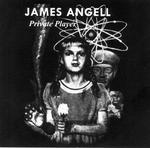

| Artist: | James Angell |
| Title: | Private Player |
| Label: | Psycheclectic Records |
| Length(s): | 43 minutes |
| Year(s) of release: | 2002 |
| Month of review: | [10/2003] |

James Angell - vocals, piano, synthesizers| 1) | Ooh Love | 4.41 |
| 2) | Who's Waking Me Up | 5.58 |
| 3) | Ed Blue Bottle | 3.35 |
| 4) | Call Off The War | 5.57 |
| 5) | Picture Perfect | 5.20 |
| 6) | Treat Song | 6.31 |
| 7) | Dear Dying Friend | 7.20 |
| 8) | Sweet Bell | 5.00 |
Who's Waking Me Up is a melodic and rhythmic one, with a very laid back atmosphere. Again the dark piano tones ring out build the atmosphere. Again, a distinctive song with a good groove and distinctive varied vocals, also in the way they are recorded.
Ed Blue Bottle has low vocals and an easy going bluesy gait. The vocals are maybe a bit in the line of Somewhere Down The Crazy River by Robbie Robbertson. It enjoys the same atmosphere. The guitar work and keyboards become quite scary later on. Call Off The War opens with keyboards, among which are also Twin Peaks like ones. This is a vague song with estranging backwards effects and bleepy keys throughout. Mesmerizing.
Picture Perfect continues the line, this time opening with strange vocal samples. Does he want to evoke music from the thirties? Could be. Singing is done in both my ears but in a scattered, arbitrary fashion. The piano is again the leading instrument. There is something of John Lennon in here.
Treat Song opens with bleepy keys, a bit frantic and arbitrary. For the remainder this is a friendly melancholy song with accessible vocals and a treated trumpet. Dear Dying Friend opens harrowingly with industrial effects. A slow dragging track with a loud pounding chorus like thing. For some reason I have to think of King Crimson here.
Sweet Bell opens with spoken vocals from a little girl. For the remainder this is a rather vague song with high vocals. Somewhat soundtrackish, lots of keyboards, it stays vague throughout.